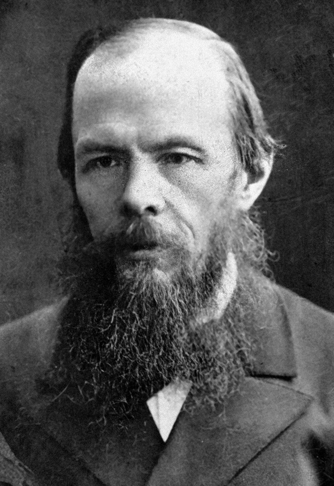
Fiódor Dostoievski, autor de Los Hermanos Karamázov
Equipo:
¡Hola! Soy Marco, tengo 25 años y soy de Trelew. Estoy en las carreras de Diseño Multimedial, Diseño Industrial y Licenciatura en Sistemas de la Universidad Nacional de La Plata.
Realicé de forma individual esta página, la aventura gráfica y un minijuego, lo que incluyó tareas como:
Programar la aventura gráfica en p5.js (Originalmente programada en Processing)
Programar el minijuego en p5.js
Desarrollar página web con HTML y CSS, también se utilizó el framework Bootstrap
Realizar arte de la aventura gráfica y del minijuego
Desarrollo:
Aventura gráfica
Originalmente la aventura gráfica estaba programada en Processing y resuelta mediante funciones, luego fue recodificada para su funcionamiento con p5.js y para utilizar orientación a objetos. En el siguiente video se realizó una explicación del código de la aventura hecho en Processing.
Los dibujos para cada pantalla de la aventura fueron hechos a mano, primero utilizando lápiz de grafito y lápiz de carbonilla; y luego, utilizando estilógrafos, se remarcaron contornos y detalles. En las siguientes imágenes se puede ver una comparación entre los dibujos antes y después de se entintados.
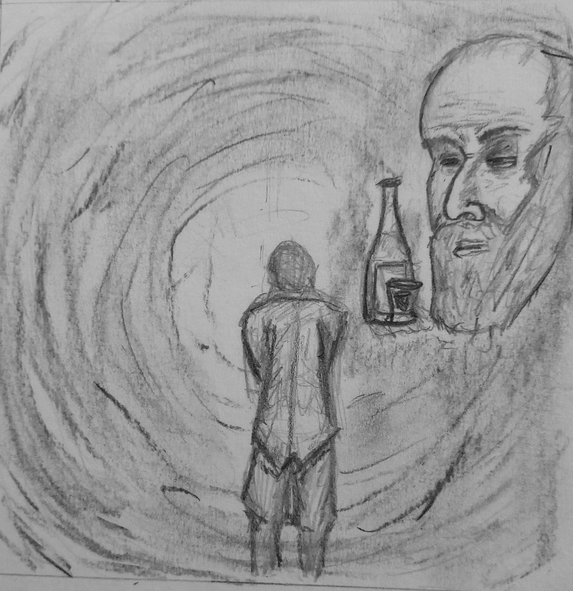
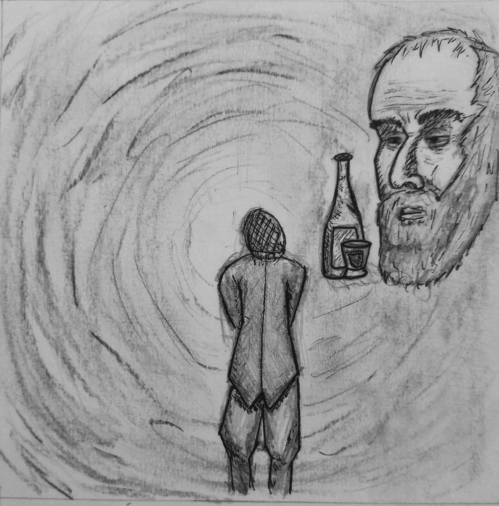
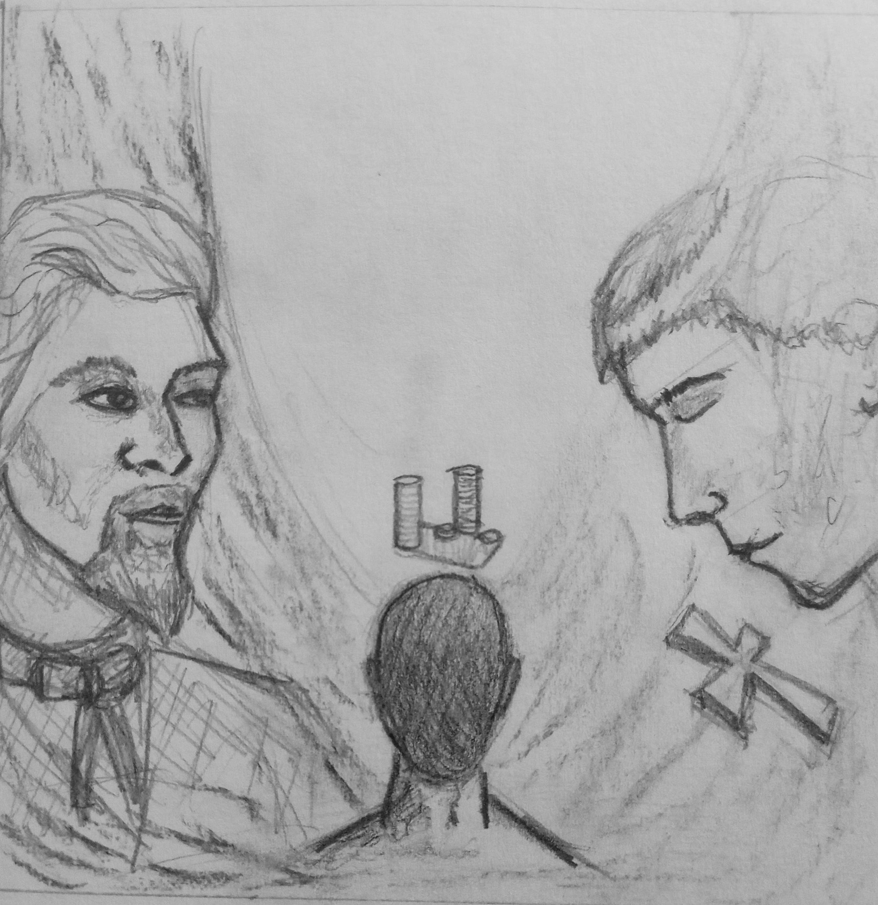
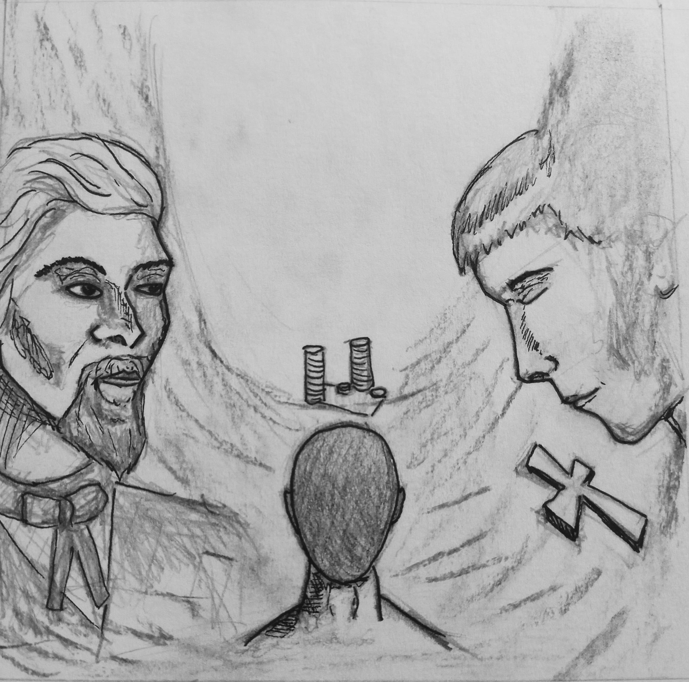
En total son doce las pantallas dibujadas, algunas representan una situación en particular, mientras que otras muestran posibles caminos que se pueden tomar al realizar elecciones en la aventura gráfica. Ya que parte de la historia fue inventada como nuevos caminos en la historia, no todas las imágenes van a representar un momento que sucede en la novela original.
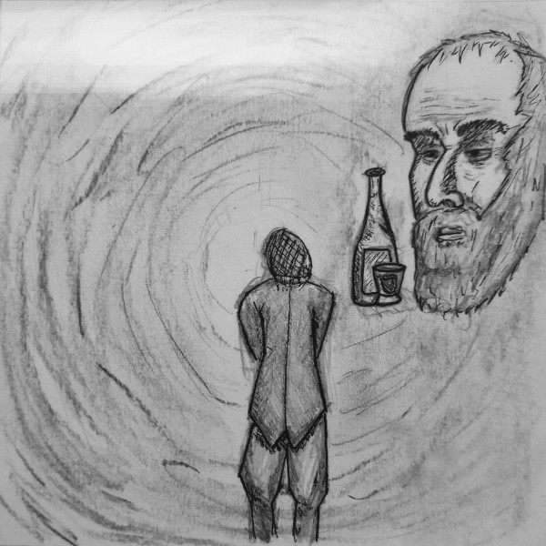
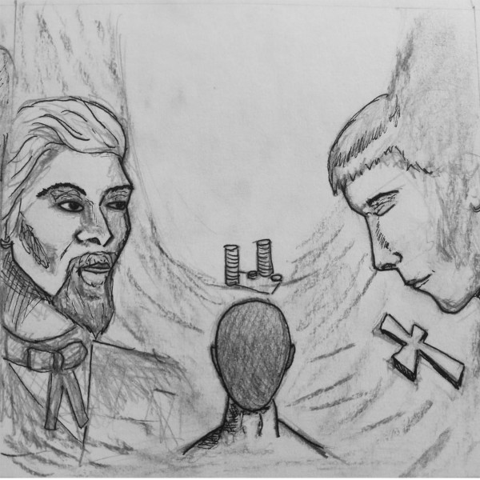
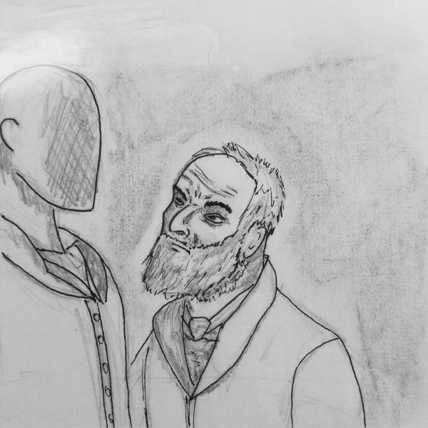
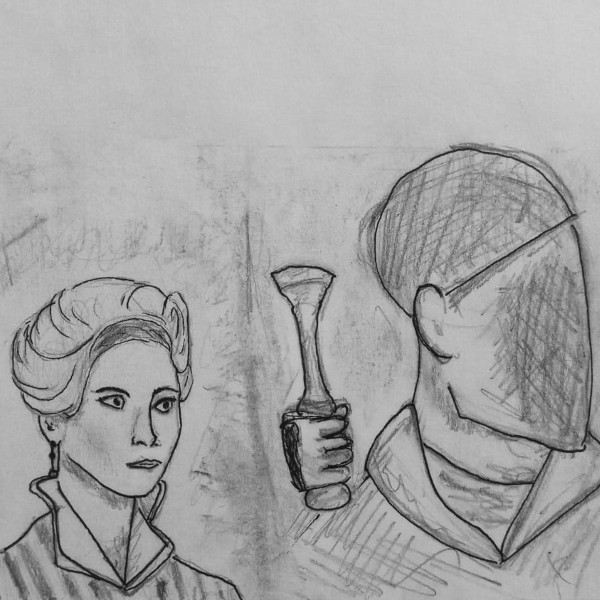
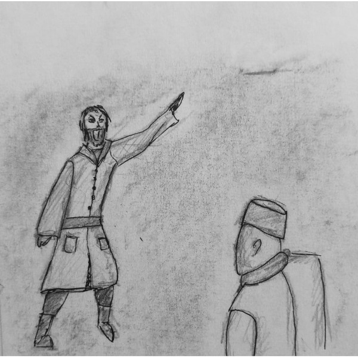
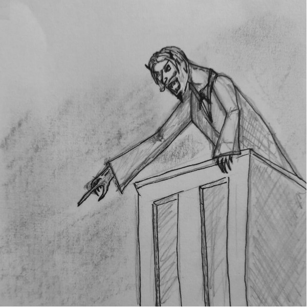
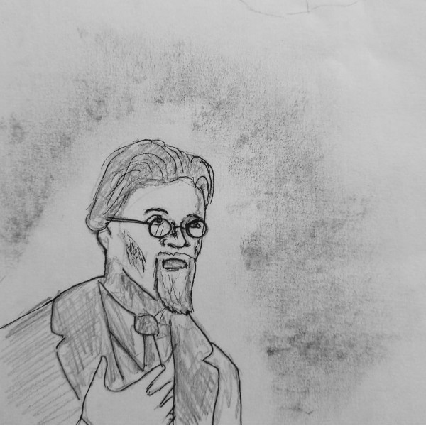
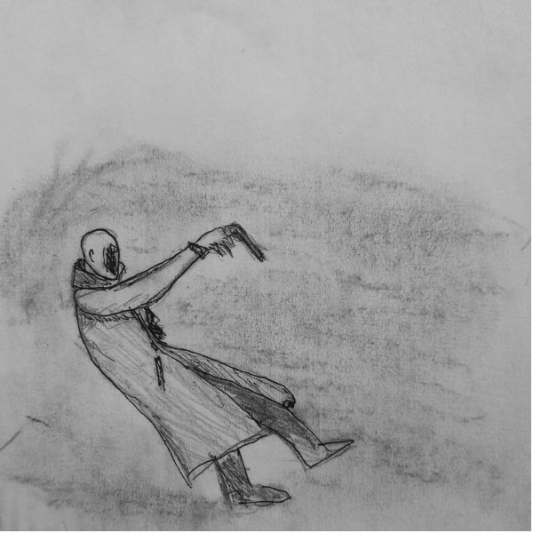
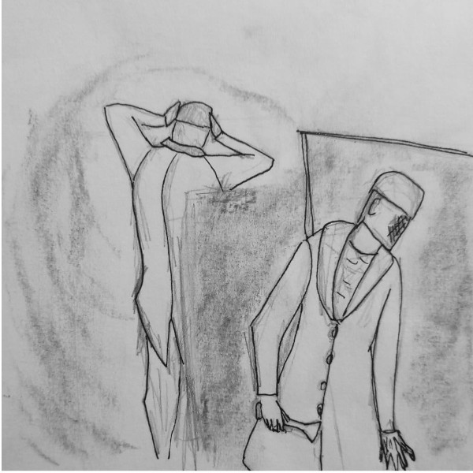
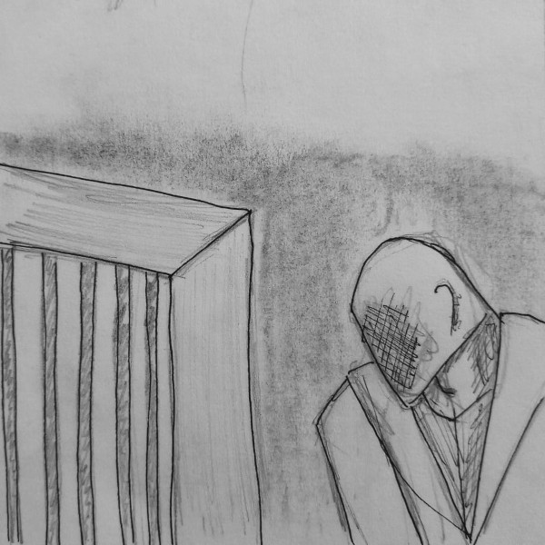
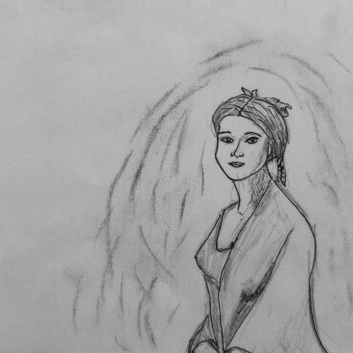
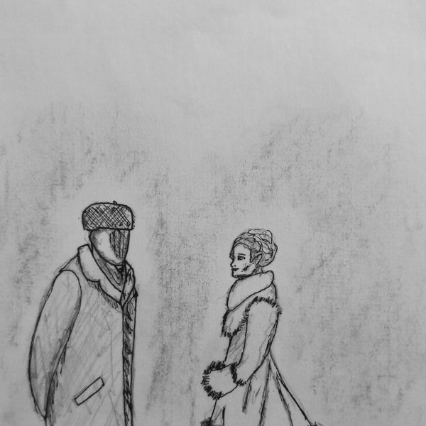
Minijuego
El minijuego realizado consiste en un duelo entre Dmitry y su padre, Fiódor. Este se realizó desde un principio en p5.js y programación orientada a objetos, en el video que sigue se realiza una explicación del código. Luego se tuvieron que hacer pequeños cambios en el código para su integración en la aventura gráfica, por ejemplo la resolución original del minijuego era distinta a la de la aventura gráfica, por lo que se tuvieron que ajustar las posiciones de los elementos dentro del juego para que se muestren correctamente.
Además de los cambios que se realizaron en el código luego, para la integración con la aventura gráfica se redibujaron los sprites. Originalmente estos estaban hechos mediante vectores, por lo que se redibujaron a mano, utilizando los mismos elementos que para dibujar las pantallas. A continuación se muestra una comparación entre los sprites hechos con gráficos vectoriales de la primera versión del minijuego y los sprites hechos a mano.
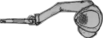
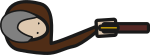
Aventura:
¡Advertencia! La aventura requiere un tamaño mínimo de 600px para funcionar.